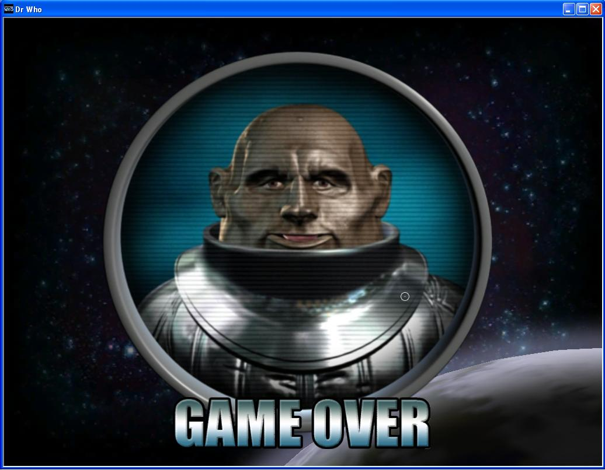
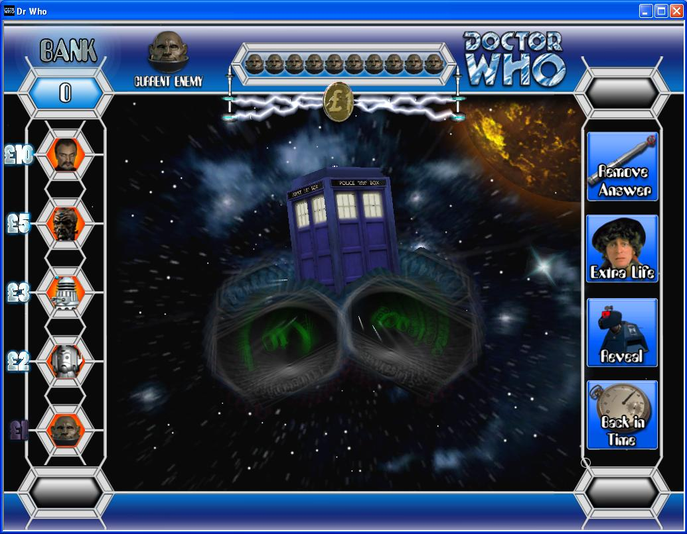
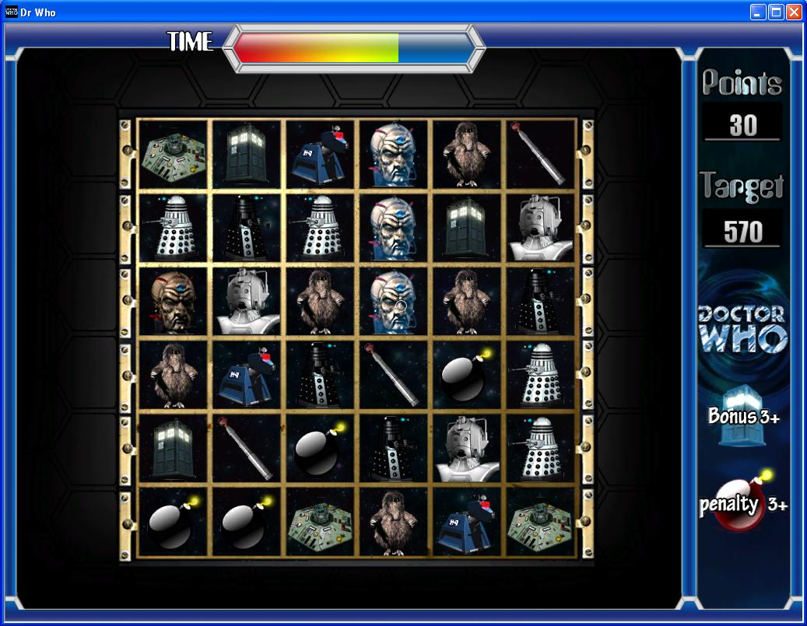
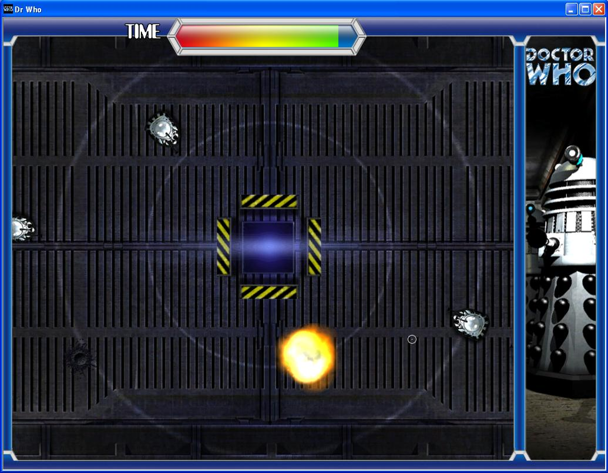

Dr Who

Game over animation

Buffer effects

Match three

Daleks attack!
Dr Who is essentially a quiz game with a selection of mini-games. Not all of the mini-games developed for the project were included in the final release. Players did not have to play mini-games, but were given bonuses for successfully completing the games; losing them didn't have any effect. The games which did make it to the final release included:
- Pairs (card game)
- Photo shuffle (photo was split and rearranged into a puzzle)
- Picture in picture
- A circuit connection game
- Whack a dalek game
- A reaction based game requiring you to destroy all the daleks before they hit the tardis
- A Match three type puzzle game (like bejeweled)
- Wordsearch
- A tetris style puzzle game
- Picture search game
Many effects were trialed in the game, from plasma effects, to buffer and warp effects to simulate the Dr. being transported to a location for a mini-game, to effects for warping of images and arcing for electricity holding cash values. Not all of these made it into the game.
Some of the mini games have been used in other projects as they were designed to be stand alone.
Development of the mini games was challenging as we wanted to come up with a series of games which were fun to play but also required no explanation.
<< Back